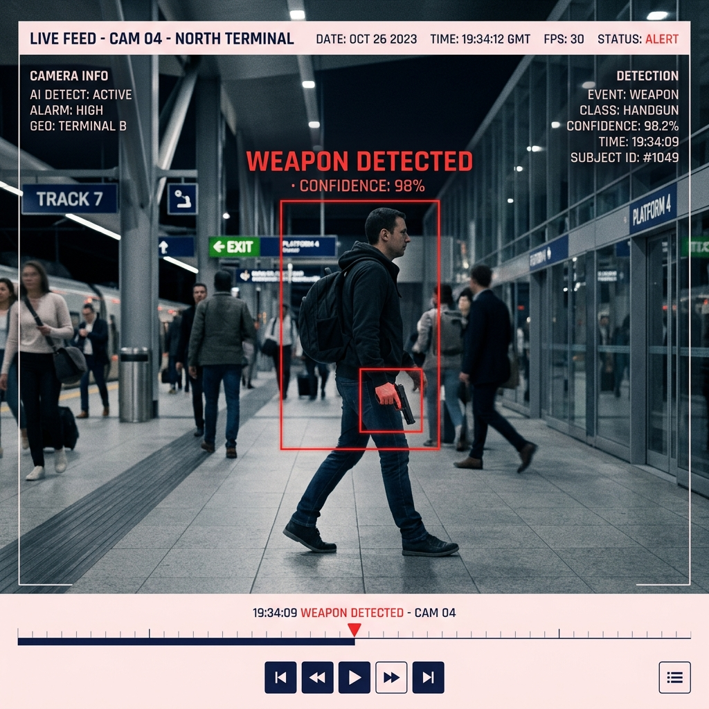

Weapon Detection
Spot the threat before the first move.
Identifies firearms, knives, and dangerous objects in live feeds and triggers an instant alert for preventive intervention.

What it does
Weapon Detection is AMS Safe City's frontline defensive module. Deep-learning vision models scan every live camera stream for firearms, knives, and other dangerous objects — the instant one is detected, the system fires a priority alert to the command dashboard with the exact camera, location, and an annotated frame.
The goal is prevention, not just record-keeping. By surfacing a visible weapon in real time, operators and police dispatch can intervene before a threat escalates into violence — a capability that conventional CCTV, dependent on a human watching the right screen at the right second, simply cannot guarantee.
Key capabilities
Detects pistols, rifles, knives and other dangerous objects across crowded and low-light scenes.
The highest-severity alert class — routed instantly to operators and dispatch with an annotated frame.
Every detection carries the source camera ID, mapped location, and timestamp for rapid response.
Designed to flag a threat as it emerges so intervention happens before harm, not after.
All processing runs on local AMS servers — no footage ever leaves the city's own network.
Detections are reviewed by an authorised operator before any response action is taken.
Capture → detect → act
Capture
Existing IP cameras stream live video to the on-premise AMS processing server over the local network.
Detect
A dedicated weapon-detection model analyses every frame in parallel, scoring each candidate object by confidence.
Alert
A confirmed detection raises a priority alert on the command dashboard with location, camera and an annotated frame.
At a glance
| Detection class | Highest priority / threat-critical |
| Processing | On-premise, real-time parallel inference |
| Inputs | Any IP / RTSP camera stream |
| Output | Dashboard alert + annotated frame + log entry |
| Data handling | No external or foreign cloud transmission |
| Oversight | Authorised human review before action |
Where it's deployed
- Government buildings. Detect armed approach at entrances and secure perimeters before breach.
- Markets & public squares. Surface concealed-carry threats in dense, fast-moving crowds.
- Checkpoints & roads. Flag weapons at vehicle stops and entry control points.
- Critical infrastructure. Protect power, water, and transport facilities from armed intrusion.
Survey, integration, training & support — included
This module is delivered as part of the complete AMS Safe City service: ISD handles site survey, integration onto your existing cameras, multi-environment AI tuning, command-centre setup, operator onboarding, and ongoing maintenance — all processed on-premise within your own network.